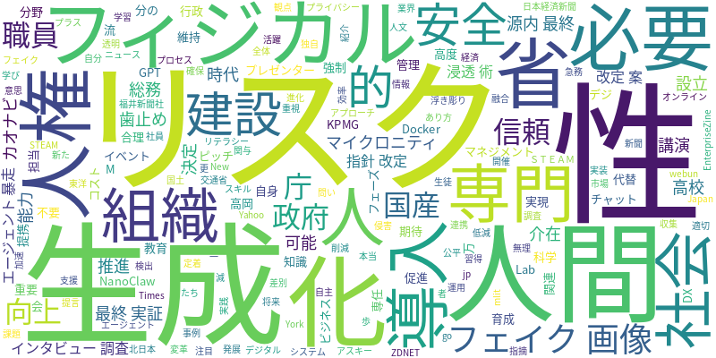

☁️ 今日のトレンドワード

📰 今日のピックアップニュース (10件)
デジ庁、国産AI「源内」最終実証へ
デジタル庁は、18万人の政府職員が利用・育成する国産AI「源内」の最終実証フェーズに入りました。AIの活用による行政サービスの効率化と、職員のAIリテラシー向上を目指しています。政府全体でのAI導入に向けた重要な一歩となります。
AIフェイク画像、AIで見破れる？
AIが生成したフェイク画像が、AI自身によって見破れるのかという問いに対し、チャットGPTが自身が生成したフェイク画像に騙される事例が紹介されています。AIの進化と同時に、その検出技術や信頼性に関する課題も浮き彫りになっています。
マイクロニティ、AI専門組織設立
マイクロニティは、AI技術の推進と社会実装を目指す専門組織「M-Lab」を設立しました。AIを活用した新たなサービス開発や、企業へのAI導入支援を通じて、ビジネスの変革を加速させることが期待されます。
建設DX、フィジカルAI活用へ
国土交通省は、建設分野におけるフィジカルAIの活用を目指したピッチイベントのプレゼンターを決定しました。省人化、安全性向上、維持管理の高度化を実現するフィジカルAIの開発・導入を促進し、建設業界のDXを推進します。
生成AI、インタビュー調査を代替
生成AIが、人間が担当していたインタビュー調査を代替する可能性が示されました。専門知識が不要で、コストを5分の1に削減できるとされており、情報収集や市場調査のあり方を大きく変える可能性があります。
カオナビ流「生成AI浸透術」
カオナビは、AI専任担当者を置かず、利用を強制しないという独自の「生成AI浸透術」を実践しています。社員の自主的な学習と活用を促すことで、無理なくAIを組織に定着させる合理的なアプローチが注目されています。
AIと人権リスク、対応の必要性
AIの発展に伴い、人権リスクへの対応が急務となっています。KPMGは、AI利用における差別やプライバシー侵害などのリスクを指摘し、企業が人権マネジメントの観点からAI関連リスクに適切に対応することの重要性を提言しています。
総務省、AI指針改定案で人間介在
総務省は、AI利用におけるリスクを低減するため、人間による介在を重視したAI利用指針の改定案をまとめました。AIの意思決定プロセスに人間が関与することで、公平性や透明性を確保し、社会的な信頼を高めることを目指します。
AI時代に必要な能力、高校で講演
高岡高校では、AI時代に求められる能力を育成するための「STEAM教育」に関する講演会が開催されました。生徒たちは、科学技術と人文・社会科学を融合した学びを通じて、将来社会で活躍するために必要なスキルを習得しました。
AIエージェント暴走リスクに歯止め
AIエージェントの暴走リスクに歯止めをかけるため、NanoClawとDockerが提携しました。この連携により、AIエージェントの安全性と信頼性を高め、より安全なAIシステムの開発と運用が可能になることが期待されます。
今日のAI・テック業界は、AIの社会実装とそれに伴うリスク管理が主要なテーマとなりました。デジタル庁は国産AI「源内」の最終実証フェーズに入り、行政分野でのAI活用を推進。一方、AIが生成したフェイク画像を見破れるかという問いは、AIの進化と検出技術の課題を示唆しています。建設業界ではフィジカルAIの活用、マイクロニティはAI専門組織を設立し、各分野でAIの応用が進んでいます。生成AIによるインタビュー調査の代替や、カオナビ流の合理的AI浸透術など、業務効率化や組織への定着に向けた動きも見られます。さらに、AIと人権リスクへの対応、総務省による人間介在を重視したAI指針改定案、AIエージェントの暴走リスクへの対策など、AIの倫理的・安全な利用に向けた議論と取り組みが活発化しています。教育現場でもAI時代に必要な能力育成が図られており、AIは社会のあらゆる側面で影響を与え始めています。